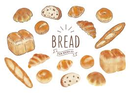

❁パンが大好きすぎる人間です

ご飯よりパン派の環境で育ちパン好きとして育ちました。
毎日パンを食べてたいです。
前職でパン屋巡りをして毎日お昼にパンを5,6個食べてたら同僚に引かれました。
パン好きすぎて学生の頃は家でもパンを作ってました。
（いまはもう無理です。）
最近はコーヒーメーカーを頂いてから朝から淹れたてのコーヒーとパンを食べるのが幸せのひと時です。
コーヒーは酸味より苦み強いほうが好きなのでブレンドしたりもします。
毎日パンを食べてたいです。
前職でパン屋巡りをして毎日お昼にパンを5,6個食べてたら同僚に引かれました。
パン好きすぎて学生の頃は家でもパンを作ってました。
（いまはもう無理です。）
最近はコーヒーメーカーを頂いてから朝から淹れたてのコーヒーとパンを食べるのが幸せのひと時です。
コーヒーは酸味より苦み強いほうが好きなのでブレンドしたりもします。